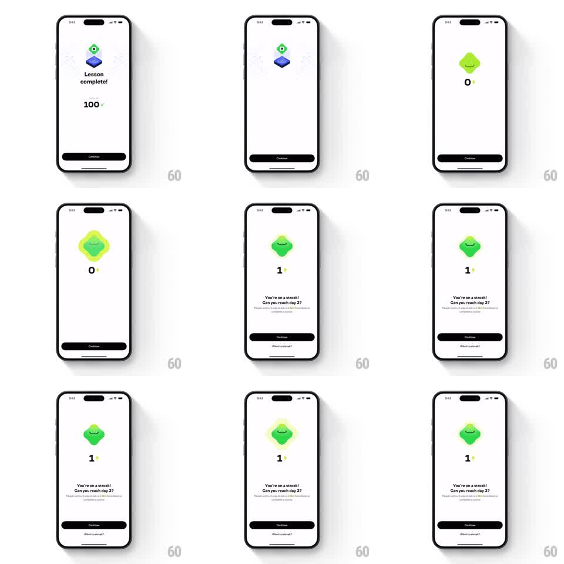

Media
Frame-by-frame

Rebuild this animation 1:1: Brilliant's lesson-complete celebration - the mascot dissolves from its platform scene into a glowing aura state while the streak counter increments and the streak copy stacks in.

Rebuild this animation 1:1: Brilliant's lesson-complete celebration - the mascot dissolves from its platform scene into a glowing aura state while the streak counter increments and the streak copy stacks in. ## Integration Integration: stack-agnostic spec - springs given as stiffness/damping, timed motions as duration + curve; map every value to your framework and animation library of choice. ## Scene White screen: first the lesson-complete state (mascot on blue platform, "Lesson complete!", 100 XP, Continue), then a streak state - the mascot larger and glowing with a radiating aura, a streak counter climbing 0 to 1 with a lightning bolt, and the copy "You're on a streak! Can you reach day 3?" with a footnote and a "What's a streak?" link. ## Motion spec Pattern: scene dissolve into aura with counter increment, ~2.5s. - The platform scene fades out (300ms) as the mascot itself persists, rising slightly and growing (scale 1 to 1.3, 400ms, ease-in-out) into the streak composition. - A soft aura blooms behind the mascot (radial glow, opacity 0 to 60%, 500ms) and begins a slow pulse (scale 1 to 1.08, 1.2s loop). - The streak counter pops from 0 to 1 (scale 1.4 to 1, spring stiffness 420 damping 14) with the lightning bolt flicking in beside it (150ms). - The headline lines fade and rise in stagger (250ms each, 120ms apart), the footnote and "What's a streak?" link last. - Continue settles with a spring rise (stiffness 300 damping 20). ## Calibration - The mascot is the continuous element across the scene change - it must not crossfade or jump. - The aura pulses after blooming; it does not strobe. ## Reduced motion Scene crossfades; counter appears at final value. ## Don't miss - The counter shows the bolt icon inline with the digit. - The footnote line is small and low-contrast - keep the hierarchy.